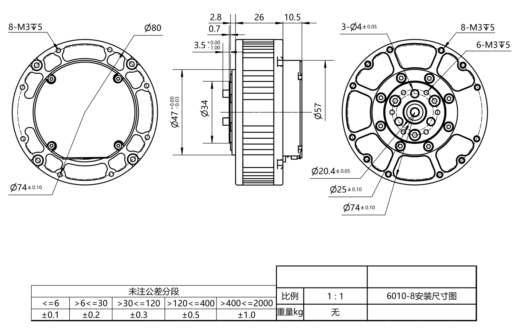
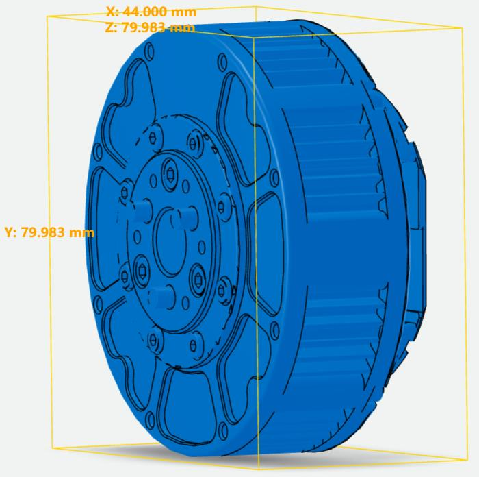
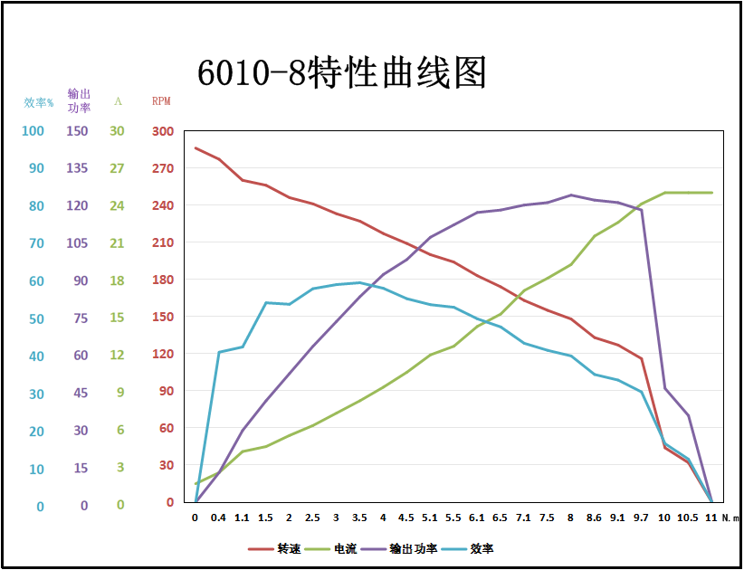

Traducción de la sección 1 del manual GIM6010-8 rev 2.2 (págs. 5–7 del original).


| Parámetro | Valor |
|---|---|
| Velocidad nominal | 120 rpm ±10 % |
| Velocidad máxima | 420 rpm ±10 % |
| Par nominal | 5 N·m |
| Par de bloqueo (rotor bloqueado) | 11 N·m |
| Corriente nominal | 10,5 A |
| Corriente de bloqueo | 25 A |
| Corriente en vacío | 0,4 A |
| Resistencia de aislamiento / devanado del estátor | 500 V CC, 100 MΩ |
| Rigidez dieléctrica / estátor a carcasa | 600 V CA, 1 s, 2 mA |
| Fuerza contraelectromotriz | 0,054–0,057 Vrms/rpm |
| Resistencia entre fases | 0,48 Ω ±10 % |
| Inductancia entre fases | 368 μH ±10 % |
| Constante de velocidad | 12,3 rpm/V |
| Constante de par | 0,47 N·m/A |
Las curvas características son las siguientes:

| Parámetro | Valor |
|---|---|
| Peso | 388 g ±3 |
| Pares de polos | 14 pares |
| Número de fases | 3 fases |
| Modo de accionamiento | FOC |
| Relación de reducción | 8:1 |